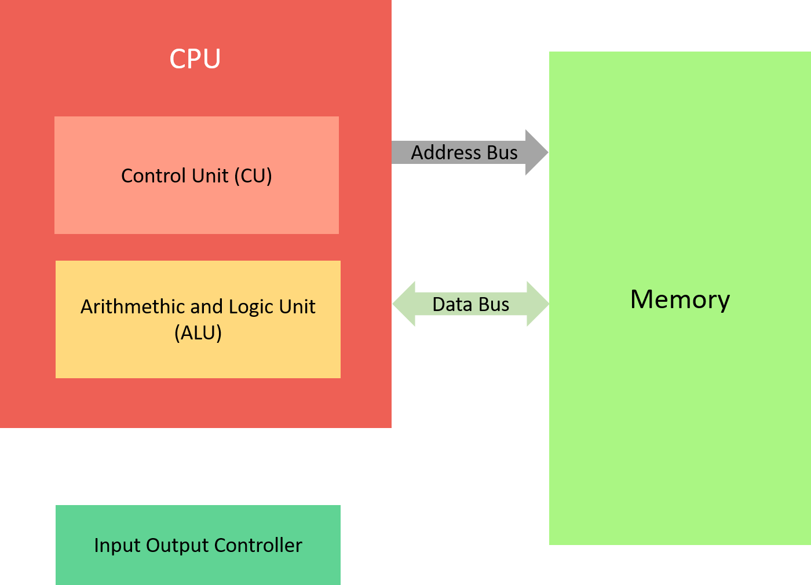
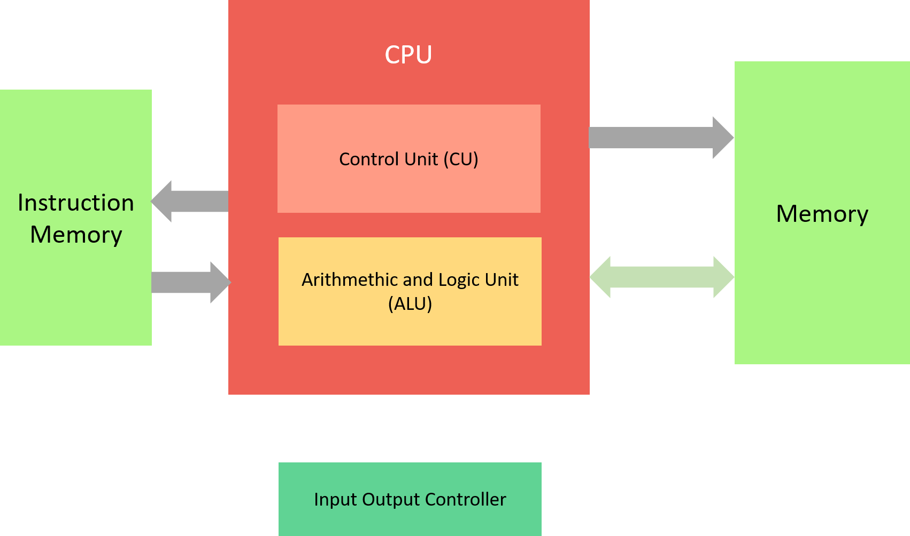
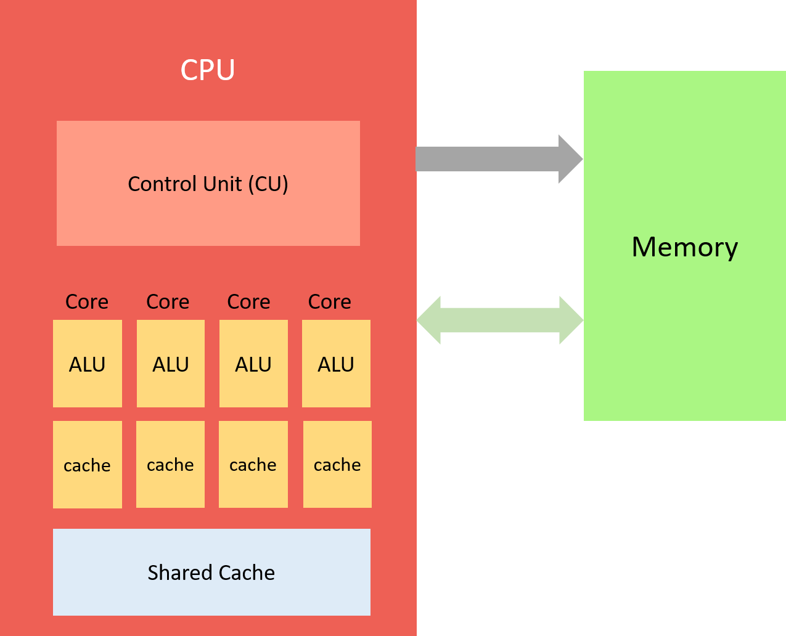

Concepts in Programming Languages
Contents
Concepts in Programming Languages#
Since the title of our course is not “How to learn Python basics in the shortest possible time” but “Software and Interface Technology”, the first section of our cookbook is about computers, programming languages and their concepts. By learning about basics of computers and concepts of programming languages, we hope to acquire a better understanding of the content we will learn in the next weeks. Furthermore it makes sense to take a step back and look at programming languages in a wider sense to learn a vocabulary of programming constructs and maybe make it easier to learn new languages by understanding concepts instead of memorize them.
Computers#
Depending on the task, computers can be very fast. At the same time they need very clear instructions to work properly. Electricity flows through a computers processing unit and is controlled by many tiny transistors (http://visual6502.org/JSSim/). Modern transistors are in the range of nanometers which allows processing units to contain more than a billion of them. Those can have two states: on (meaning 1) or off (meaning 0). So by moving 1s and 0s through the circuits, the computer can store data and execute calculations. Before we jump into processing, let’s take a brief look at what computers today usually consist of.
The Motherboard#
The motherboard is sometimes also called mainboard. It is the main circuit board of a computer and its backbone that connects all major components together such as the Central Processing Unit (CPU), memory, other important ports and e.g. the Graphics Processing Unit (GPU).
The Central Processing Unit (CPU)#
Von Neumann architecture#
John von Neumann, in 1945, has described a computer architecture with a few digital components. The components consist of
a Arithmentic and Logic Unit (ALU)
a Control Unit (CU)
Memory to store data and instructions and
Input and output mechanisms.
In the Von Neumann Architecture, the main memory stores instructions (program) that are to be executed as well as data as binary values next to each other. The processing unit is composed of the ALU and the CU in the Von Neumann Architecture. Instructions are executed sequentially and separately over the Address Bus (connection that looks at a specific location for the program) and the Data Bus (connection that transfers data from and to the memory) which means that one instruction at a time is being fetched from memory and passed to the CPU. This means that not only the capabilities of your CPU is important but also the speed of the connection between your CPU and memory. In the Von Neumann Architecture you can’t access instructions and data at the same time which leads to two transfer cycles to get instructions and data. This is called the “Von Neumann Bottleneck”.

Harvard Architecture#
The Harvard Architecture consists roughly of the same elements. However, Data Memory and Instruction Memory are separated from each other which allows us to access data and instructions at the same time. Also the memories do not need to be built equal or of equal size.

Modern CPUs#
When looking at a modern central processing unit (CPU) of a computer (basically the circuitry that controls the manipulation of data), we can find
one or multiple cores containing Arithmetic/Logic Units (ALUs) which are managed by
a Control Unit (CU)
multiple layers (depending on distance to the ALU) of Cache Memory that stores frequently used instructions and data

The operation of a modern CPU is controlled by a single control unit that coordinates instructions between multiple cores. Further CPUs contain (multiple) levels of cache memory to temporarily store frequently used instructions and data so it does not have to make requests to the memory all the time. Each core usually has its own cache while there is also a shared cache with more memory but due to its distance to the core, slower speeds. Slower is relative though: due to the data not passing through a bus to and from the memory, it’s still much faster than fetching instructions or data from the memory.
RAM, Permanent Storage and the Cloud#
Storage and memory both refer to the computers internal storage space. However, memory (e.g. random access memory, RAM) and storage (e.g. a hard disk drive or solid state drive) play different roles in a computer. Storage holds all data, files and instructions needed to run the computer. It is not volatile: data will stay in storage until it is being deleted. Memory on the other hand is temporary. When a computer is being used, it loads necessary data from storage to memory (so from your storage drive to your RAM) and gets rid of it eventually. The RAM is connected to your CPU via a bus that enables quick access to the data. Storage is connected via an interface such as SATA (https://sata-io.org/) or NVMe (https://nvmexpress.org/). “The cloud” is a data storage model in which the data is not stored on your local device but outside of your local network. The physical environment, meaning the hard drives the data is stored on, is typically owned by an external company (such as Microsoft for OneDrive, Apple for iCloud, Google for Drive, Dropbox, …). While cloud storage benefits from the fact that it is accessible from anywhere given an internet connection, it is usually slower since the data has to travel through the network first.
Bits and Bytes#
We have learned about the transistors and their states (on = 1, off = 0). Bits are represented as zeroes and ones and modern computers use 8 Bits per Byte. Usually they are organized as “Words” of 32 or 64 Bit (or 4 Bytes or 8 Bytes). Bits and Bytes can represent anything such as numbers, text, images, sound, video, … - you get the idea. Anyway, you are not supposed to write programs in 0s and 1s - we will get to writing our own programs soon enough and you will see that we can use almost basic English to write our first program. As for Bits and Bytes: you will learn more about them in Interface Technology!
So many programming languages…#
There are hundreds of programming languages and numerous visualisations to attempt to show their relationships to each other (such as ProgrammingLanguages.info or Programming Languages Genealogical Tree). Another nice resource to find out more about the history of computing is the Wikipedia entry about the history of programming languages. You can find more on why we use Python in the next chapters.
Why are there so many programming languages?#
Asking why there are so many programming languages is like asking why are there so many tools in a toolbox in a repair shop. Sometimes special purposes require specific tools and from that point of view, programming languages can be considered tools. Also computing has evolved and with that, programming languages did as well. Some companies created their own languages to control all implementation details: Microsoft and C#, Apple with Swift, Mozilla with Rust and so on. Outside of evolving hardware, sometimes programming languages evolve due to new approaches to problems in academia and the industry.
How to proceed?#
Depending on the point of view, some programming languages might make more sense to learn than others. At HCU we have decided to teach Python which is considered a “general purpose language”. However, during your time here you will have contact with SQL, a declarative query language which is useful when working with databases. A popular programming language used as one of the main ingredients for websites is JavaScript (JS). Lots of Python libraries are accessing JavaScript code to e.g. visualize data so when fine tuning your (geo)plots, it might make sense to have a rough understanding of JavaScript.
Interpreted and compiled programming languages#
Before we proceed to take a look at Python: We don’t want to dive into the specifics of each programming language and what they excel at but there is one important differentiation we want to look at. There are interpreted and compiled programming languages.
Interpreted programming languages do not require compilation, they are translated into machine code when being executed. Python, alongside JavaScript, PHP and BASIC are interpreted programming languages. The downside of interpreted programming languages is that they are converted to machine code each time they are executed which takes time to process.
Compiled languages require a compilation prior to running, the compiled programs usually only run on one specific architecture (Windows, Linux, macOS, 32/64 Bit) but they are much faster (since they do not have to be converted to machine code each time they are executed). C, C++ and Fortran are examples for compiled programming languages.
Sources#
For further information on the topics discussed in this chapter, feel free to take a look at the following sources:
https://github.com/stereobooster/programming-languages-genealogical-tree
https://en.wikipedia.org/wiki/History_of_programming_languages
Programming from the Ground Up by Jonathan Bartlett, ISBN 0975283847 (https://www.researchgate.net/publication/265580654_Programming_from_the_Ground_Up)